在对应关系一讲里，实际上已经涉及了整体和部分的思想。从整体到部分，从部分到整体都属于数学思维方式。我国有一叶障目的成语，也有一叶知秋的成语。“一叶”是秋天的一个特征，能够推出秋天来，因为它是秋天的固有特征。在整体和部分之间，也有特定的对应关系，或者说某个特征，通过这个特征就能从部分推出整体，从整体推出部分。
有关整体和部分的题目，可以培养孩子注意观察细节、统观全局的能力，也可以提高孩子的逻辑推理能力和想象力。
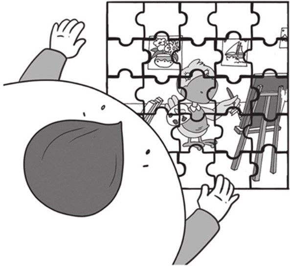
典型例题 1 小狗家的围墙被小猪拱坏了，你帮小狗看看，他需要买几块砖回来补围墙呢？
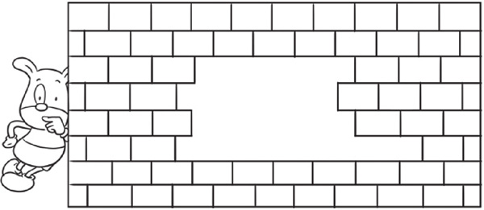
从墙上剩余的砖来看，砖的排列是有一定规律的，可以看到单数排的砖是对齐的，双数排的砖也是对齐的。按照这个规律，从下往上补砖，补完之后的效果如下图所示，数出需要补的砖的数量是18块。
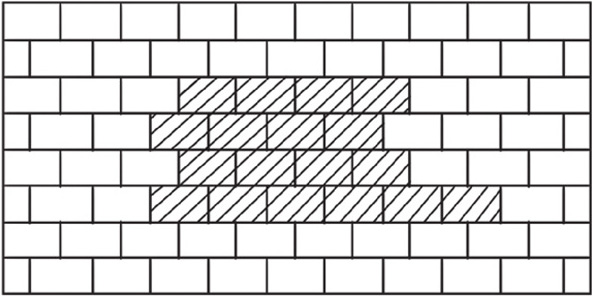
典型例题 2 你能数出右边的图中有多少个五角星，多少个正方形吗？
图中大部分五角星和正方形都有一部分被遮挡住了。但是我们可以通过没有被挡住的部分，根据五角星和正方形的图形特点数出五角星和正方形的数量。
图形中一共有12个五角星，12个正方形。
典型例题 3 莫妮卡在玩拼图，她已经把拼图拼完了，你知道她的拼图块一共有多少块吗？
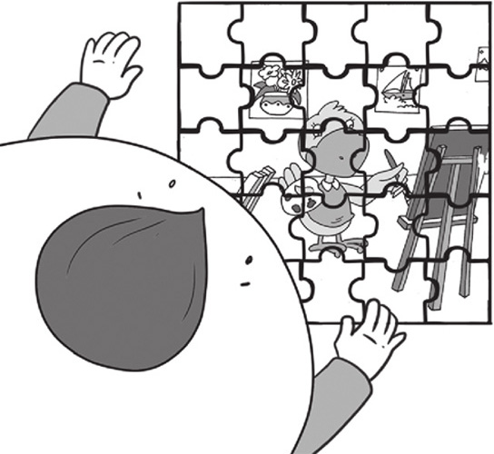
从图中看，拼图有一部分被莫妮卡挡住了，如果没有被挡住，我们就可以直接通过数数，数出拼图块的数量了。我们仔细观察拼图，可发现拼图块的排列是有规律的，被挡住的拼图块的排列规律应该和其他地方的拼图块的排列规律是一样的。拼图每一行、每一列的拼图块数量都是一样的，所以我们数拼图块的数量，方法也很简单，我们先数一行的拼图块的数量，再数下一行拼图块的数量，依次数，数的次数与行数相同就行了。莫妮卡玩的拼图块一共是5行5列，所以拼图块一共是25块。
典型例题 4 地上有3个洞，马克想知道哪个洞最深，他分别往每个洞里放了1根同样长的竹竿，你知道哪个洞最深吗？
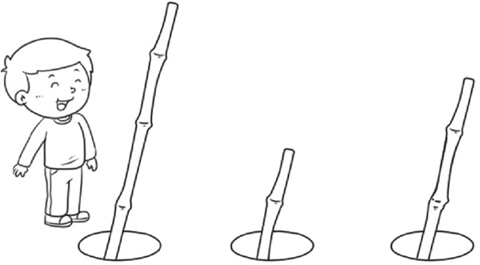
本题实际上考查了守恒的概念，由于竹竿是一样长的，所以露在外面的部分越短，在洞里的部分就越长。根据洞深度和竹竿长度的对应关系，在洞里的竹竿越长，洞就越深，所以中间的洞最深。
1.小猫家的围墙被老鼠破坏了，你知道猫爸爸需要用多少块砖，才能把墙砌好吗？
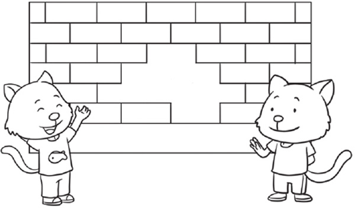
2.你能数出下面的图形中有多少个六角星，多少个圆形吗？
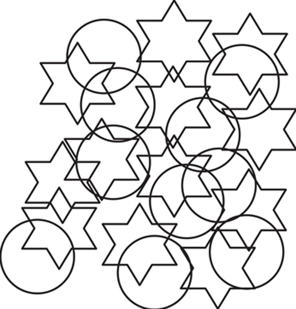
3.莫妮卡在路上看到一辆汽车，你知道这辆汽车有多少个轮子吗？
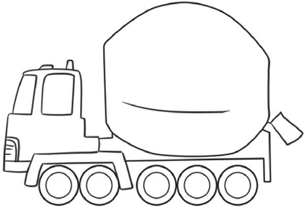
4.马克家的院子里有规律地种了一些苹果树，你知道他们家种了几棵苹果树吗？
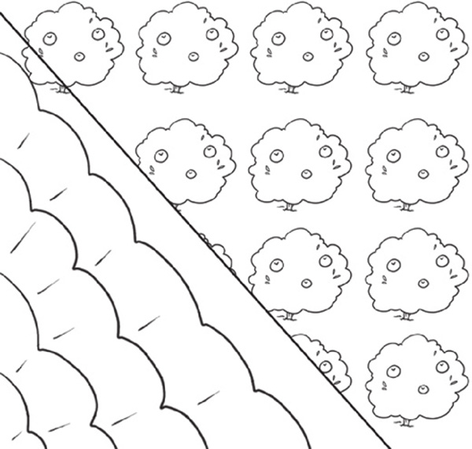
5.工人师傅在贴瓷砖，你知道他们已经贴了多少块瓷砖了吗？其中带条纹的瓷砖多少块？不带条纹的瓷砖多少块？
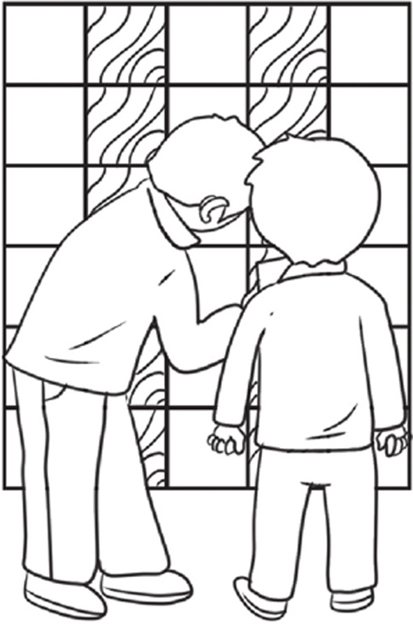
6.4个相同的盒子里都放了一些大白兔奶糖，把4个盒子都放到水里，你知道哪个盒子里装的奶糖最多吗？
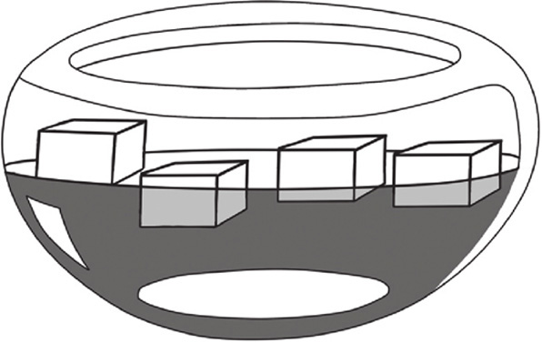